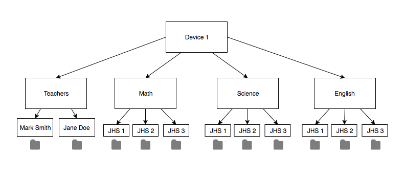

Accra, Ghana
Our team has been working with TechAide, a technology company based in Accra, Ghana that aims to deliver affordable technology solutions to promote educational opportunities throughout Ghana, West Africa, and beyond.
Education Solutions
Asanka is an operating system that runs on a RaspberryPi and serves as an offline content storage device for classrooms where internet access is scarce. Asanka enables teachers and students to access a range of educational content as well as store any personal files teachers want to integrate into their curriculum.
Asanka by TechAide
TechAide delivers three main technology services, EduLab, ProLink, and Asanka. Our team worked with the Asanka product, which is an offline content storage and management solution for classrooms and schools.
Asanka: How it Works
- Asanka's Cloud Account is managed by select administrators at each school
- Teachers are able to share content with admins to store on the device for classroom use
Asanka Cloud Account
- The Asanka Device is set up in classrooms with computer
- The device side of Asanka can be accessed offline through a Wi-Fi signal given off by the RaspberryPi.
Asanka Device
Our Project
User Interface Redesign
Current UI is difficult to navigate and unintuitive, not designed for Teachers

Information Architecture
All content is in one location, no separation of resources or organization
Security Recommendations
User accounts and permissions are not present
Original Design
Difficult to Find Files
Because all of the content on Asanka is located in one location, if there are many files on the device, finding a particular file can be challenging.
No Ownership of Content
Currently, there is no way to determine who is using which files on Asanka. This makes it difficult to determine who to contact about removing or modifying a file.
Challenging to Optimize Storage
Due to limited storage, files are frequently added and removed from Asanka. Because there is no ownership of files and no information architecture, it is difficult to fairly distribute storage between teachers and departments.
Architecture Redesign
Original

New
New Design
Information Architecture
By creating an information architecture to categorize content based on subject, grade level, and teacher, management of content on Asanka is easier than ever before. Because storage space on Asanka is limited, administrators are often uploading new content and removing old files. Administrators will now be able to better understand what content is associated to which teacher so they can effectively distribute resources.
Teacher-Specific Design
Giving every teacher their own folder for personal files encourages teachers to utilize Asanka more and gives them a sense of ownership over Asanka. With this design, we hope to encourage teachers to use technology more often in their classrooms.